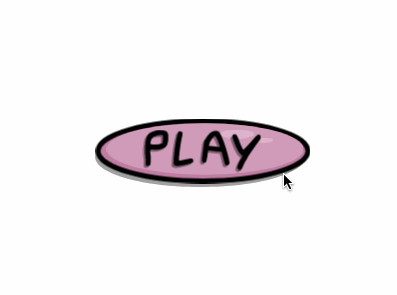
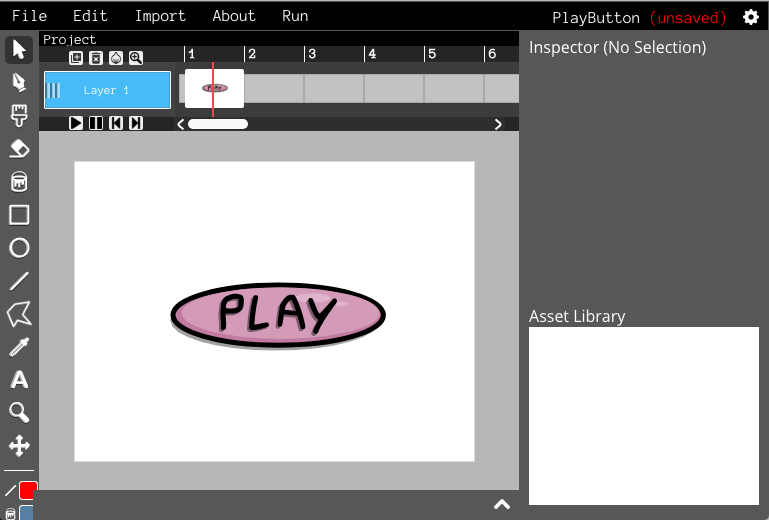
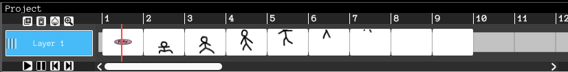
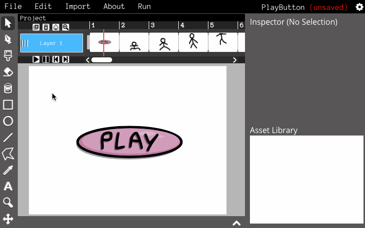
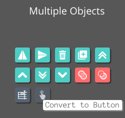
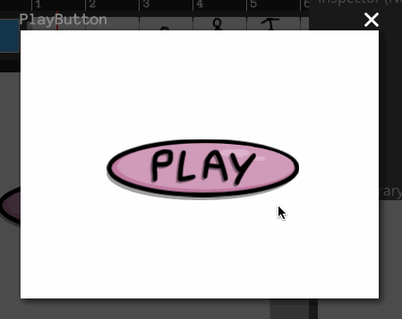
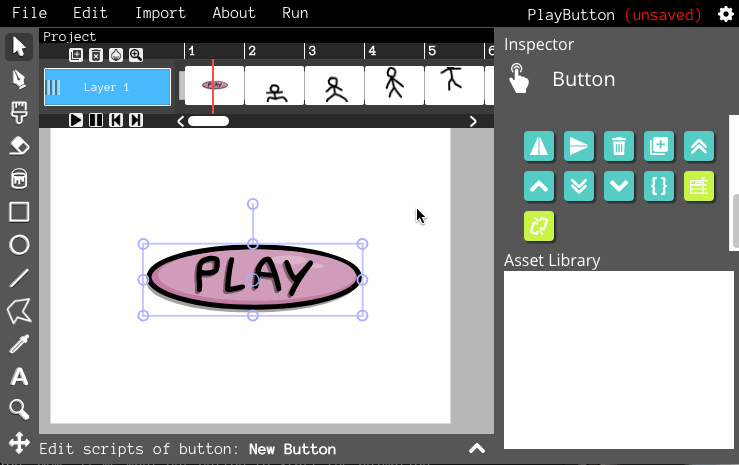
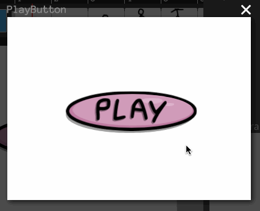
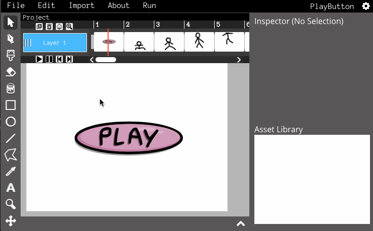
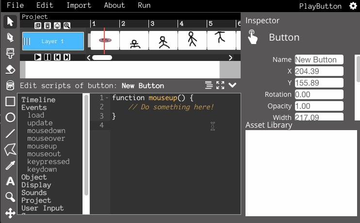

Creating a Play Button
In this tutorial, you will learn how to make a simple play button for an animation!
Setting up your project
Let's get started by creating the "menu" screen of the project. This is where the play button will be.
Now create a few more frames and draw a simple animation (if you get stuck, check out the animation tutorial).
Your project should now look like this: One frame for the play button, and a few more frames for the animation. Now, if we want our button to start the animation, we're going to have to add a script.
Building a button
First, try running your project. Notice that it plays by itself - we need to make the sure the project won't start playing automatically. Click on the first frame and open the scripting tab. Now, select Timeline -> stop. Now your project won't play automatically.
Select the button you drew earlier and click "Convert to Button" in the Inspector.

Now we have a button! Try running your project and moving your mouse over the button. You'll notice that the cursor turns into a hand to show that it's clickable.
This is a boring button! Let's make it more fun by changing its size and color when the mouse is hovered over it and when its clicked on. Select the button and click the "Edit Object" button in the Inspector.

You are now inside the button! Take a look at the bar right below the timeline - you'll see that you are editing "New Button". (To go back to where you were before, you can click "Project").
You'll notice that there are three labels in the timeline now. Buttons have their own frames. These frames are shown when the mouse interacts with the button. So if we want to make the button change when the mouse rolls over it, we create a frame under the "mouseover" label and draw what the button should look like. Do the same for the "mousedown" label.

If you run your project now, our button is a little more exciting! It reacts to the mouse hovering over it and clicking it.
Our button looks nice, but it's useless right now since it doesn't actually do anything when its clicked!
Adding the script
Select the button and click the "Edit Code" button in the inspector. This will open up the scripting window.
Let's build a script that will play the animation when the button is clicked. We'll need two parts: code that plays the timeline, and an "event" that tells us when to run that code. Select the button you created and open the scripting tab. Select Events -> mouseup.
Now remove the comment inside the curly braces. In its place, select Timeline -> play.
Now run your project and enjoy your play button!